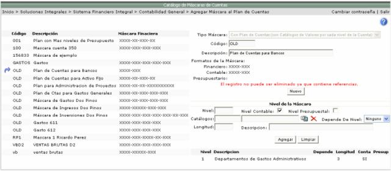
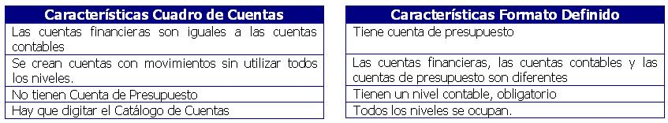

En el módulo de contabilidad es donde se crean las cuentas financieras. Primero se debe de crear el catálogo de cuenta de mayor, en la opción Catálogos << Agregar Cuenta de Mayor:
La lista de máscaras a asociar a la cuenta mayor, se definen en la opción Catálogos << Agregar Máscara al Plan de Cuentas:


Si la máscara se asigna por parámetros, la misma se define en el módulo Administración del Sistema, en la opción Catálogos << Menú Principal << Parámetros Generales del Sistema.

Las cuentas financieras pueden ser de dos tipos:

